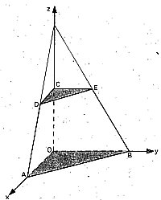
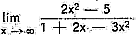
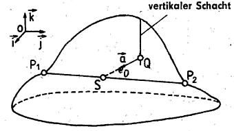
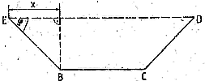

Startseite > 1983/84 >1984/85 > 1985/86 > 1986/87
(Vektoren fett und kursiv; : Winkel)
| 1. | Gegeben ist die Funktion f durch y = f(x) = x2 - 1/3 * x3 (xR) |
| a) | Berechnen Sie die Nullstellen von f! |
| b) | Berechnen Sie die Koordinaten der lokalen Extrempunkte
des Graphen von f! Untersuchen Sie die Art dieser Extrema! |
| c) | Skizzieren Sie den Graph von f im Intervall -2x4! |
| d) | Berechnen Sie den Inhalt der Fläche, die vom Graph der Funktion f und der x-Achse vollständig begrenzt wird! |
| 2: |
Gegeben ist die Funktion f durch y = f(x) = In (2x - 1) (xR; x > 0,5). |
| a) | Berechnen Sie die Nullstelle x0 von f! |
| b) | Berechnen Sie die Funktionswerte f(0,6), f(2) und f(4)! Skizzieren Sie den Graph von f im Intervall 0,6x4! |
| c) | Ermitteln Sie die Gleichung der Tangente t an den Graph der Funktion f im Punkt P0 (x0; 0)! |
| d) | Der Punkt M (0; 3) ist Mittelpunkt des Kreises k mit
dem Radius r = 5. Zeichnen Sie den Kreis in die Skizze ein! Stellen Sie die Gleichung des Kreises k auf! |
| e) | Weisen Sie rechnerisch nach, dass die Tangente t auch den Kreis k berührt! |
| 3. |
Die
Punkte O, A, B, C, D, E sind Eckpunkte eines Pyramidenstumpfes mit OA || CD und OB || CE (siehe Skizze!). Es gilt: OA = OB = 6,0 cm CD = CE = 3,0 cm OC = 3,0 cm Skizze (nicht maßstäblich) |
| a) | Geben Sie die Koordinaten der Punkte A, B, C, D, E an! |
| b) | Berechnen Sie die Koordinaten des Schnittpunktes S der Diagonalen AE und BD! |
| c) | Berechnen Sie den Schnittwinkel der Diagonalen AE und BD! |
| d) | Weisen Sie nach, dass die Strecke OS orthogonal zur Diagonalen AE ist! |
| 4. | Eine Zentrifuge läuft mit einer Drehzahl von a0 Umdrehungen pro Minute. Nach Abschalten des Stromes verringert sich die Drehzahl und nimmt nach 1 Sekunde den Wert a1 Umdrehungen pro Minute an, nach k Sekunden den Wert ak Umdrehungen pro Minute. |
| a) | Die Zahlen a0, a1, a2,
... sind Glieder einer geometrischen Folge. Berechnen Sie die Glieder a2 und a3 dieser Folge für den Fall, dass a0 = 1 250 und a1 = 1 000 gilt! |
| b) | Die Drehzahl y Umdrehungen pro Minute nach t Sekunden
kann auch beschrieben werden durch eine
Exponentialfunktion der Form y = f(t) = 1 250 * e-ct (tR, t0; cR, c > 0). Berechnen Sie c für den Fall, dass f(1) = 1 000 gilt! Berechnen Sie für diesen Fall f(3)! |
| 5. | Kurzaufgaben |
| a) | Gegeben ist die Funktion f durch y = f(x) = (1 - x2) / e3x (xR). Berechnen Sie f'(0)! |
| b) | Ermitteln Sie den Grenzwert  ! |
| c) | Wie viele dreistellige Zahlen gibt es, in denen die auftretenden Ziffern ungerade und voneinander verschieden sind? |
| 6. |
Gegeben ist die Funktion f durch y = f(x) = 10 / (1 + x) (xR; x1). |
| a) | Berechnen Sie die Funktionswerte f(1), f(2), f(4) und
f(7)! Skizzieren Sie den Graph von f im Intervall 1x7! |
| b) | Der Graph von f, die x-Achse sowie die Geraden x = k und
x = k + 1 begrenzen die
Fläche mit dem Inhalt AK vollständig (k = 1, 2, 3, ...,
n, ...). Berechnen sie A1, A2, A3 und An! |
| c) | A1, A2,
A3, ... bilden die Glieder einer Zahlenfolge (An). Berechnen Sie die Glieder s1, s2 und s3 der zugehörigen Partialsummenfolge (sn)! |
| d) | Weisen Sie nach, dass für das n-te Glied sn der Partialsummenfolge gilt: sn = 10 * In ((n + 2)/2)! |
| 7. |
Durch einen Berg führt die geradlinige Tunnelstrecke P1P2
mit P1(100; 20; 100) und P2(400; 200; 90) (Skizze!). Skizze (nicht maßstäblich) |
| a) | Berechnen Sie die Länge der Tunnelstrecke P1P2! Stellen Sie eine Gleichung für die Gerade g auf, die durch die Punkte P1 und P2 geht! |
| b) | Von einem Punkt Q (210; 122; zQ) eines
vertikal verlaufenden Schachtes aus soll in Richtung des Vektors a = (2, -6,
-3) ein geradlinig verlaufender Entlüftungsstollen gebaut werden, der den
Tunnel im Punkt S trifft. Berechnen Sie die Koordinaten von S! |
| c) | Berechnen Sie die Höhe von zQ, von der aus der Bau des Entlüftungsstollens begonnen werden muss! |
| d) | Berechnen Sie den Winkel zwischen dem vertikal verlaufenden Schacht und dem Entlüftungsstollens! |
| 8. |
Der Querschnitt einer oben offenen Rinne ist ein gleichschenkliges Trapez mit BC = 6,8 dm und CD = BE = 4,0 dm (siehe Skizze!) Skizze (nicht
maßstäblich) |
| a) | Berechnen Sie den Flächeninhalt des Querschnitts für den Fall, dass DE = 12,8 dm beträgt! |
| b) | Berechnen Sie x oder für den Fall, dass der
Flächeninhalt des Querschnitts maximal
wird! (Auf den Nachweis des Maximums wird verzichtet.) |
| c) | Berechnen Sie diesen maximalen Flächeninhalt! |
Ein Service von http://abitur.hechtnetz.de
Startseite > 1983/84 >1984/85 > 1985/86 > 1986/87